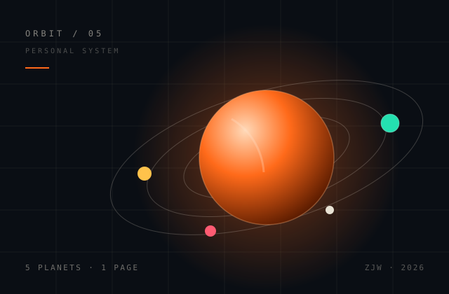
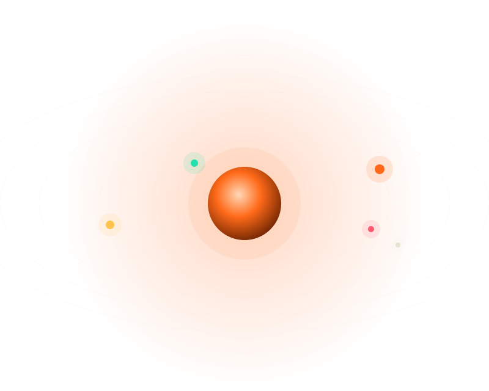
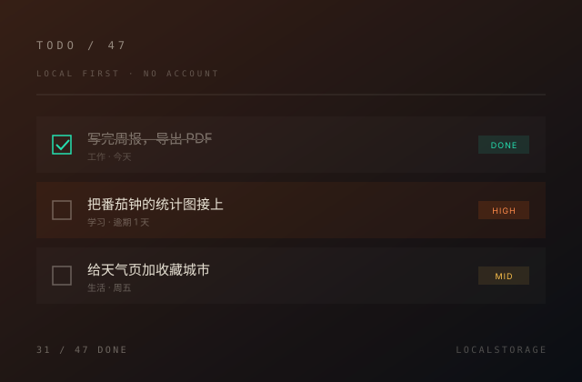
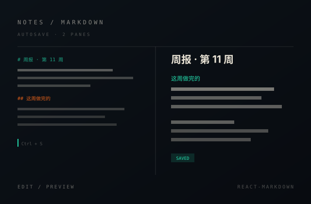
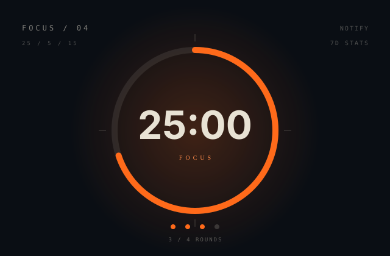
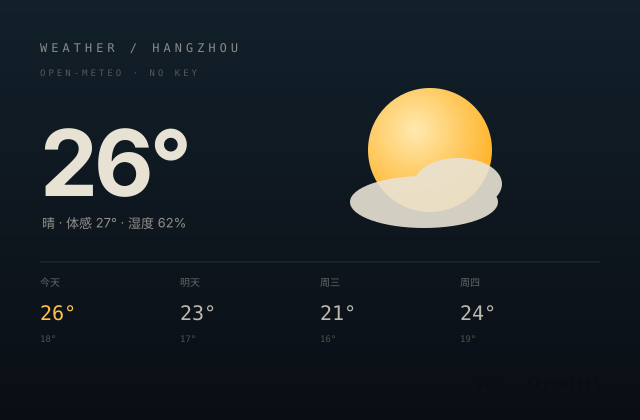

档案版 / 一页看完
张镓文
ZHANG JIAWEN · HANGZHOU大二，写代码，也写作业。
计算机专业。杭州。现在在补番茄钟的统计图。
- GPA 3.7 / 4.0
- 校程序赛三等奖
- CET-6 528
- 5 个上线作品

五条轨道，五个板块。桌面端会转。
01
作品
点开就能用。源码在 GitHub。




02
能力
成绩不算顶尖。分数自己打的。
- 2025
二等奖学金
专业前 15%。我妈终于放心了。
- 2025
GPA 3.7 / 4.0
Web 95，高数 68。及格万岁。
- 2024
校程序赛三等奖
10 题过 7 题。剩下真不会。
- 2024
英语六级 528
看英文报错不用翻译了。
-
TypeScript / React86
主站 + 4 个工具。
-
HTML / CSS90
五颗行星，纯 CSS。
-
Python（课上学的）76
课上学的。能写脚本。
-
Git 提交（不乱写）80
3 个仓库，提交有说明。
-
Vite 打包调优78
主站 191KB，工具按需加载。
-
公网部署 ×2 平台84
GitHub Pages 上跑着。
自评只用来排优先级。不服可以考我。
03
经历
时间线
2025 — 现在
2025 — 现在
大二在读
白天上课，晚上写项目。4 个工具，晚自习写的。
2024 — 2025
自学前端
从 CSS 居中开始。5 个月后，第一个站上线。
2022 — 2025
高中
信息学小组。打出 Hello World。从此入坑。
04
爱好
代码之外，基本就这四件事。
打篮球
院队替补。场均 12 分钟。抢 3 个板。
打 P5
这站的配色，抄它的。
扫街拍照
拍 3000 张。能看 30 张。
写笔记
每周 1 篇。工具为它做的。
05